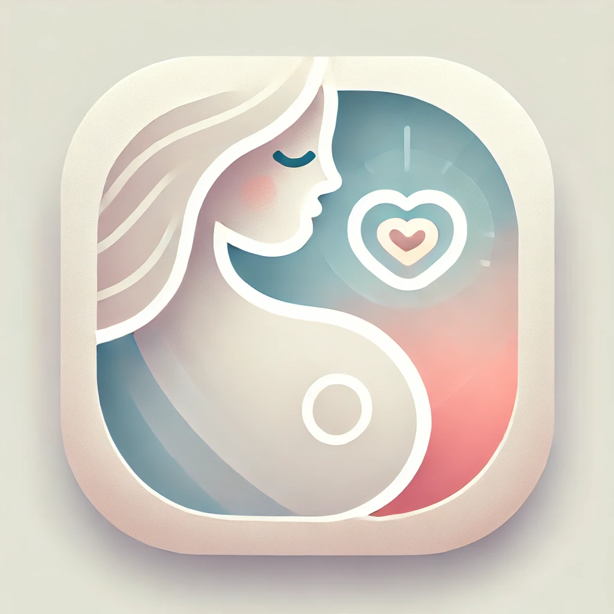

Familie & Begleitung
Schwangerschaft-Sorglos begleitet Schritt für Schritt.
Die App unterstützt werdende Eltern mit einer übersichtlichen Wochenstruktur, hilfreichen Informationen, Erinnerungen und einem ruhigen Zugang zu einer intensiven Zeit. So bleibt Wichtiges besser im Blick, ohne den Alltag unnötig zu überladen.

Schwangerschaft-Sorglos
Wissen, Wocheninfos und Erinnerungen
Wochenansicht
Erinnerungen
Mehrsprachig
Alltagshilfe
Wichtige Informationen zur richtigen Zeit.
Wochenbezogene Inhalte
Hilft dabei, die Entwicklung besser einzuordnen und aktuelle Themen passend zur Schwangerschaftswoche zu sehen.
Erinnerungen organisieren
Eigene Termine und Hinweise lassen sich leichter im Blick behalten, ohne extra Systeme zu brauchen.
Beruhigende Struktur
Die App soll nicht überfordern, sondern Orientierung geben und Sicherheit im Alltag vermitteln.
Geeignet für
- Werdende Eltern, die eine einfache Begleit-App suchen
- Menschen mit Bedarf an Erinnerung und Struktur
- Alle, die eine ruhige, verständliche Aufbereitung mögen
Was die App besonders macht
- Klare Wochenlogik statt unübersichtlicher Reizflut
- Nutzbare Erinnerungsfunktion für wichtige Termine
- Ein freundlicher, alltagsnaher Begleiter durch die Schwangerschaft
Kontakt
Unterstützung zu Schwangerschaft-Sorglos
Wenn du Fragen oder Feedback hast, erreichst du uns direkt über den Support.